Practice Log n Share
September 2026
Gambaran umum
Mencatat latihan dengan satu ketukan, lalu menunjukkan layar yang sama kepada guru saat les. Saya merancang konsep dan desain aplikasi iPhone ini untuk latihan saksofon saya sendiri, lalu mengimplementasikannya bersama AI.


- Peran
- Perencanaan, desain UX/UI, implementasi (bersama Claude Code dan Codex)
- Periode
- September 2026
- Teknologi
- React · TypeScript; Swift (WKWebView, Live Activity, StoreKit, iCloud)
Coba demo web (memuat catatan latihan pribadi saya per 20 September 2026)
Awal mula — “Bagaimana latihannya?”: saya tidak bisa menjawab
Saat les dua minggu sekali, jawaban “lebih banyak tangga nada” tidak menjelaskan apa yang saya latih dan berapa lama. Menulis jurnal kertas dengan saksofon tergantung di leher terasa sulit, sementara aplikasi pencatat waktu yang saya coba ditujukan untuk meninjau catatan sendiri.

Mencatat — Sambil memegang alat musik, cukup satu ketukan
Selama latihan, saya hanya menyentuh kartu kategori. Ketuk untuk mulai menghitung, ketuk kartu lain untuk beralih, dan ketuk kartu yang sama lagi untuk berhenti.
- 1 Riwayat
- Latihan sejauh ini. Yang pertama terlihat saat aplikasi dibuka.
- 2 Hari ini
- Urutan dan pembagian latihan. Penuh setelah satu jam.
- 3 Berjalan
- Hanya kartu ini yang terang dan berbingkai putih.
- 4 Kartu
- Ketuk untuk beralih. Waktu hari ini ditampilkan besar.
Satu hari — Setelah penuh, batang tetap penuh
Batang hari ini penuh setelah satu jam. Setelah itu, total saat ini menjadi ujung kanan, sehingga ruang kosong tidak muncul lagi pada batang yang sudah penuh.
Latihan hari ini — 1 jam 05 mnt
Dipilih
Ditolak
Akumulasi — Semua terlihat, sejak hari pertama
Kepekatan hijau menunjukkan latihan, bingkai merah menandai les, dan guliran horizontal dapat mencapai hari pertama pencatatan. Saya mengutamakan melihat latihan bertahun-tahun daripada meringankan proses tampilan.

Berbagi — Di awal les, satu layar langsung menjelaskan
Total per kategori dan rincian harian merangkum periode dari les terakhir hingga hari ini, siap ditunjukkan kepada guru. Tabel harian memuat semua kategori dalam satu layar, meski teks harus diperkecil, sehingga tidak perlu menggulir horizontal.

Perkembangan — Kartu menjadi panel kendali latihan
Saya membangun layar dari spesifikasi yang disusun lewat dialog dengan AI, lalu berulang kali mencoba dan memperbaikinya sendiri. Saya mengeksplorasi pencatatan dan berbagi dalam versi web awal sebelum membuat aplikasi untuk iPhone.

9 September
Versi awal

21 September
Versi web
24 September
iOS 1.0
- Nama dan waktu, bersama
- Saya menampilkan waktu hari ini secara besar pada kartu, menghubungkan apa yang dilatih dengan durasinya.
- Status saat ini, sekilas
- Saya hanya menerangkan kartu yang sedang dihitung waktunya dan meredupkan yang lain.
- Kendali tetap di dalam layar
- Guliran berhenti pada posisi saat satu baris kartu muat di layar.
Menjelang akhir, saya mengulangi siklus sekitar 15 kali: Claude Code mengajukan kemungkinan masalah, Codex memeriksa dan memperbaiki, lalu saya memutuskan perubahan yang diterima.
Rasa interaksi — Memilih cara berhenti dengan mencobanya
Instruksi kata-kata saja tidak menghasilkan rasa “bergerak mulus lalu berhenti tepat”. Bersama AI, saya membuat alat untuk mengganti metode dan nilai seketika, mencoba lima metode pada perangkat nyata, lalu memilih mekanisme snap bawaan peramban.
Model gundukan

Proyeksi titik akhir

Bawaan proximity
Dipilih

Bawaan mandatory

Tanpa snap


Sebagai produk — Di luar latihan
Tampilan mengikuti pengaturan perangkat. Catatan latihan disimpan di perangkat dan dicadangkan otomatis ke iCloud.

Saat digunakan — Pertanyaan berikutnya: seberapa rinci harus dicatat
Saya menggunakan aplikasi saat latihan pagi dan menunjukkan layarnya kepada guru saat les. Tanggapannya: isi latihan langsung terlihat, dan mencatat jenis tangga nada akan lebih bermanfaat lagi (parafrasa). Saya mempertimbangkan satu tingkat di bawah kategori agar catatan lebih rinci tanpa mengorbankan kemudahan.
Materi
Demo web memungkinkan Anda mencoba pencatatan dan berbagi. Demo memuat catatan latihan pribadi saya per 20 September 2026; perubahan hanya disimpan dalam peramban yang sedang digunakan.